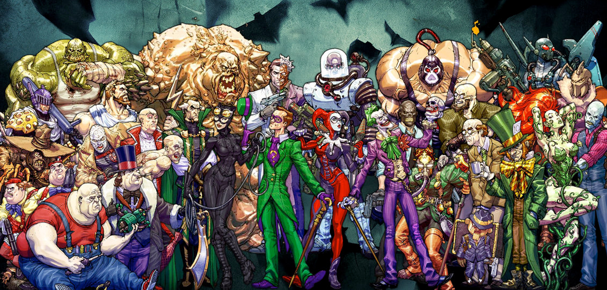
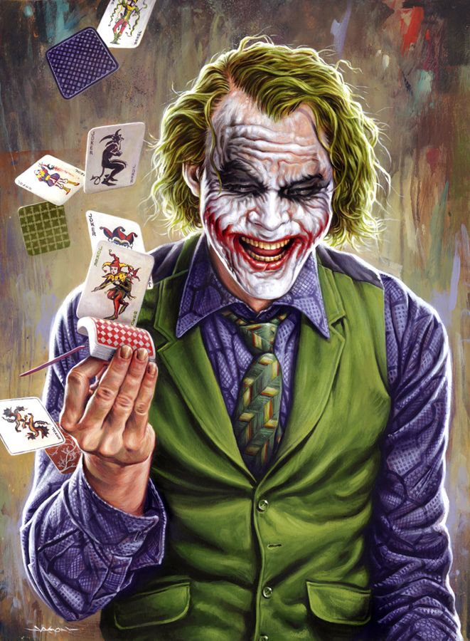

Batman's foes
|
Back to home page

|
Each and everyone of the villains made an impact to the storys, they were built around them.
The villains help batman become better and train for all that is to come.

The joker is the most and biggest villain against batman
Batman is order, Joker is chaos.
The joker, as we see portrayed in multiple comics, and the Dark Knight film, lives for one sole purpose, and that is to antagonise Batman to the point at which he kills him.

This link will take you to a source.